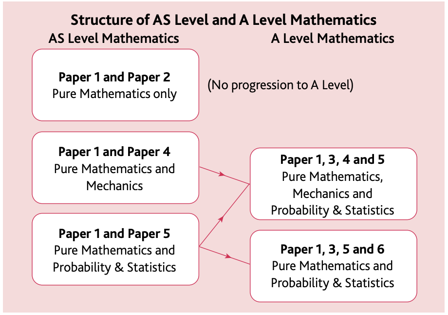
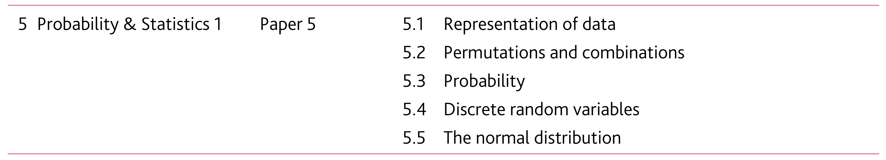

CIE (Cambridge International examination board), also called CAIE 12th grade Math course 9709
This paper is part of the choices for candidates appearing for the A- or the AS- level.

The topics covered as part of the Probability & Statistics 1 course and Paper 5 (what we shall call as S1 Math) are shown below:

The topics covered in the course are shown below, and links to each of the topics follows further below.
We will take an approach slightly different from what standard textbooks follow, in order to build a clear understanding of the subject. We will be organising our learning of Statistics in the following three parts:
Events with Categorical values
Events with Numerical, Discrete values
Events with Numerical, Continuous values
As we well know, Statistics of course revolves around the study of data. In our case, we will consider data concerning the chances of events of the above three kinds. A couple of examples of each is below:
Events with Categorical values
If I draw 3 cards from a pack of cards, what are the chances that all three of them belong to the same suit?
In a class of 50 students, randomly seated every day in 2-seater benches, what are the chances that I will get to sit next to my best friend?
Events with Numerical, Discrete values
Amongst families having 4 children, what are the chances of finding families with say 3 boys? In general, what are the chances of 0 boys, 1 boy, 2 boys, 3 boys and 4 boys?
A factory manufactures bulbs and ships them out in boxes of 10 each, what are the chances that a box has 3 or more faulty bulbs? In general, what are the chances of 0 faulty bulbs, 1 faulty bulb, … all 10 faulty bulbs (and a very unhappy customer)?
Events with Numerical, Continuous values
We want to form a basketball team and need tall players, what are the chances of shortlisting players who are 6’04” or taller from the city of Bangalore?
The stock price of a company is 123.45 today, what are the chances that it will be more than say 134.56 after 10 days?
That will helps organise our study systematically.
Towards this, we will breakup and order the chapters in the syllabus as follows (note that this is different from the order in standard textbooks but will help us develop a systematic understanding for the subject):
Events with Categorical values
Ch 5. Permutations and combinations, and the basics of counting.
Ch 3. An understanding of the basic statistics vocabulary - Experiment, Outcomes, Sample Space, and importantly Events. Followed by Probability of categorical events, including independent events, exclusive events, conditional events (all with categorical values).
Events with Numerical, Discrete values
Ch 1. Data representations - mean, median, mode and standard deviation, etc.
Ch 2. Data representations - frequencies of the numerical data and graphs including cumulative frequency curves
Ch 4. Discrete Random variables
Ch 6. The binomial distribution and geometric distribution